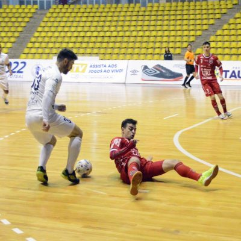

Imagem de um jogo de futsal entre Taubaté é Atlântico
Historia do futsal
O futsal, também conhecido como futebol de salão, teve origem em Montevidéu, no Uruguai, em 1934,chegou no Brasil em 1935 ate hoje e aonde o esporte e mais praticado,Ainda no início poderíamos encontrar 7 jogadores em cada equipe (14 no total). Mais tarde e com as novas formulações, esse número foi reduzido para 10 no total Também devemos ressaltar o peso da bola, que a princípio, era mais leve. Com os chutes, por exemplo, era muito fácil ela sair da quadra. Portanto, mediante observações, o seu peso foi sendo aumentado
Fundamentos do Futsal
Os objetivos desse esporte, tal qual no futebol, é fazer gols. Assim, a equipe vencedora é aquela que conseguir fazer o maior número de gols durante a partida.
O tempo total de jogo é de 40 minutos. Ou seja, são dois tempos de 20 minutos com um intervalo de 10 minutos entre eles.
O futsal reúne diversos movimentos desde chutes, passes de bola, dribles, cabeceios, etc.
Além dos jogadores presentes na quadra e na reserva, cada equipe possui um treinador. Além disso, há dois árbitros: o auxiliar e o principal. O cronometrista é responsável por controlar o tempo de jogo.
Regras do Futsal
No futsal nunca se deve colocar a mão na bola. O único jogador que pode é o goleiro que usa uma luva para defender a marcação de gol pela equipe adversária.
Como o futebol de campo, se um jogador cometer falta ele pode levar o cartão amarelo (advertência) ou vermelho (expulsão). Três cartões amarelos equivalem a um vermelho.
As faltas podem ser cometidas quando o jogador encosta a mão na bola, quando há desavenças entre jogadores e árbitros, ou ainda, quando há violência física ou verbal. O juiz que irá decidir a gravidade da falta e o cartão que será dado.
Jogadores